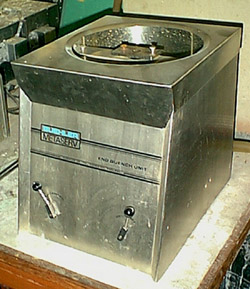
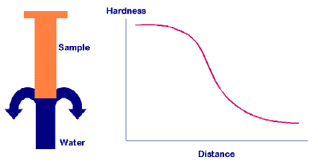
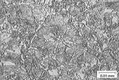
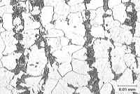
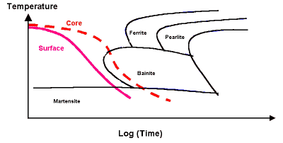
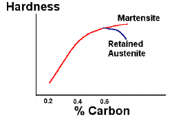
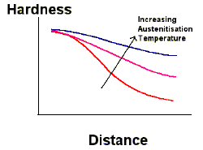
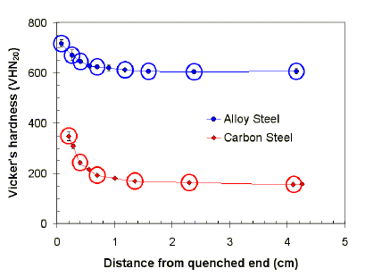
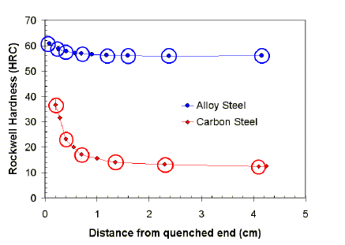

The original, as published: DoITPoMS, University of Cambridge, The Jominy End Quench Test. CC BY-NC-SA 4.0, https://creativecommons.org/licenses/by-nc-sa/4.0/. Imported as published, from https://www.doitpoms.ac.uk/tlplib/jominy/ https://www.doitpoms.ac.uk/tlplib/jominy/
The Jominy end quench test is used to measure the hardenability of a steel, which is a measure of the capacity of the steel to harden in depth under a given set of conditions. This TLP considers the basic concepts of hardenability and the Jominy test.
Knowledge about the hardenability of steels is necessary to be able to select the appropriate combination of alloy steel and heat treatment to manufacture components of different size to minimize thermal stresses and distortion. The Jominy end quench test is the standard method for measuring the hardenability of steels. This describes the ability of the steel to be hardened in depth by quenching.
Hardenability depends on the chemical composition of the steel and also be can affected by prior processing conditions, such as the austenitizing temperature. It is not only necessary to understand the basic information provided from the Jominy test, but also to appreciate how the information obtained can be used to understand the effects of alloying in steels and the steel microstructure.
Hardenability is the ability of a steel to partially or completely transform from austenite to some fraction of martensite at a given depth below the surface, when cooled under a given condition. For example, a steel of a high hardenability can transform to a high fraction of martensite to depths of several millimetres under relatively slow cooling, such as an oil quench, whereas a steel of low hardenability may only form a high fraction of martensite to a depth of less than a millimetre, even under rapid cooling such as a water quench. Hardenability therefore describes the capacity of the steel to harden in depth under a given set of conditions.
Steels with high hardenability are needed for large high strength components, such as large extruder screws for injection moulding of polymers, pistons for rock breakers, mine shaft supports, aircraft undercarriages, and also for small high precision components such as die-casting moulds, drills and presses for stamping coins. High hardenability allows slower quenches to be used (e.g. oil quench), which reduces the distortion and residual stress from thermal gradients.
Steels with low hardenability may be used for smaller components, such as chisels and shears, or for surface hardened components such as gears.
Hardenability can be measured using the Jominy end quench test.
The test sample is a cylinder with a length of 102 mm (4 inches) and a diameter of 25.4 mm (1 inch).
Jominy test specimen
The steel sample is normalised to eliminate differences in microstructure due to previous forging, and then austenitised. This is usually at a temperature of 800 to 900°C. The test sample is quickly transferred to the test machine, where it is held vertically and sprayed with a controlled flow of water onto one end of the sample. This cools the specimen from one end, simulating the effect of quenching a larger steel component in water.

Jominy test machine
The cooling rate varies along the length of the sample from very rapid at the quenched end, to rates equivalent to air cooling at the other end.

The round specimen is then ground flat along its length to a depth of 0.38 mm (15 thousandths of an inch) to remove decarburised material. The hardness is measured at intervals from the quenched end. The interval is typically 1.5 mm for alloy steels and 0.75 mm for carbon steels.
High hardness occurs where high volume fractions of martensite develop. Lower hardness indicates transformation to bainite or ferrite/pearlite microstructures.
|  |  |
| Martensite | Ferrite/pearlite |
Jominy end quench hardness data for two steels of different hardenability can be seen in a later section of this TLP, with images of the microstructure variation along the length of the sample.
Similar tests have been developed in other countries, such as the SAC test, which uses a sample quenched from all sides by immersion in water. This is commonly used in the USA.
Data from the Jominy end quench test can be used to determine whether a particular steel can be sufficiently hardened in different quenching media, for different section diameters.
For example, the cooling rate at a distance of 9.8 mm from the quenched end is equivalent to the cooling rate at the centre of an oil-quenched bar with a diameter of 28 mm. Full transformation to martensite in the Jominy specimen at this position indicates that a 28 mm diameter bar can be through hardened, i.e. hardened through its full thickness.
A high hardenability is required for through hardening of large components. This data can be presented using CCT (Continuous Cooling Transformation) diagrams which are used to select steels to suit the component size and quenching media. Slow quenching speeds are often chosen to reduce distortion and residual stress in components.

CCT diagram for an alloy steel
Slower cooling rates occur at the core of larger components, compared to the faster cooling rate at the surface. In the example here, the surface will be transformed to martensite, but the core will have a bainitic structure with some martensite.
Jominy end quench test can also be used to demonstrate the effects of microstructure and alloying variables on the hardenability of steels. These include alloying elements and grain size.
The main alloying elements which affect hardenability are carbon, boron and a group of elements including Cr, Mn, Mo, Si and Ni.
Carbon
Carbon controls the hardness of the martensite. Increasing the carbon content increases the hardness of steels up to about 0.6wt%. At higher carbon levels, the formation of martensite is depressed to lower temperatures and the transformation from austenite to martensite may be incomplete, leading to retained austenite. This composite microstructure of martensite and austenite gives a lower hardness to the steel, although the microhardness of the martensite phase itself is still high.

Effect of carbon content (wt%) on hardness
Carbon also increases the hardenability of steels by retarding the formation of pearlite and ferrite. However, the effect is too small be be commonly used for control of hardenability. High carbon steels are prone to distortion and cracking during heat treatment, and can be difficult to machine in the annealed condition before heat treatment. It is more common to control hardenability with other elements, and to use carbon levels of less than 0.4wt%.
Boron
Boron is a very potent alloying element, typically requiring 0.002 to 0.003wt% to have an equivalent effect as 0.5wt% Mo. The effect of boron is also independent of the amount of boron, provided sufficient is added, and the effect of boron is greatest at lower carbon contents. It is typically used with lower carbon steels.
Boron has a very strong affinity for oxygen and nitrogen, with which it forms compounds. Boron can therefore only affect the hardenability of steels if it is in solution. This requires the addition of "gettering" elements such as aluminium and titanium to react preferentially with the oxygen and nitrogen in the steel.
Chromium, molybdenum, manganese, silicon, nickel, vanadium
The elements Cr, Mo, Mn, Si, Ni and V all retard the phase transformation from austenite to ferrite and pearlite. The most commonly used elements are Cr, Mo and Mn.
The retardation is due to the need for redistribution of the alloying elements during the diffusional phase transformation from austenite to ferrite and pearlite. The solubility of the elements varies between the different phases, and the interface between the growing phase cannot move without diffusion of the slowly moving elements. There are quite complex interactions between the different elements, which also affect the temperatures of the phase transformation and the resultant microstructure. Steel compositions are sometimes described in terms of a carbon equivalent which describes the magnitude of the effect of all of the elements on hardenability.
Increasing the austenite grain size increases the hardenability of steels. The nucleation of ferrite and pearlite occurs at heterogeneous nucleation sites such as the austenite grain boundaries. Increasing the austenite grain size therefore decreases the available nucleation sites, which retards the rate of the phase transformation. This method of increasing the hardenability is rarely used since substantial increases in hardenability require large austenite grain size, obtained through high austenitisation temperatures. The resultant microstructure is quite coarse, with reduced toughness and ductility.

Effect of austenite grain size on hardenability
The austenite grain size can be affected by other stages in the processing of steel, and therefore the hardenability of a steel also depends on the previous stages employed in its production.
A plain carbon steel and an alloy steel were assessed using the Jominy end quench test.
The hardness of the samples was measured as a function of the distance from the quenched end to demonstrate the different hardenability of the two steels. The data is shown as Vickers and Rockwell hardness.
The alloy compositions are given in the table below.
| (wt%) | C | Mn | Cr | Ni | Si | Mo | P | S |
| Plain carbon Steel | 0.3 | 0.7 | 0.1 | 0.14 | 0.26 | 0.03 | 0.003 | 0.02 |
| Alloy steel | 0.3 | 0.6 | 0.7 | 3.5 | 0.26 | 0.35 | 0.01 |
The Vickers hardness test uses a square pyramidal diamond indentor. The recorded hardness depends on the indentation load and the width of the square indentation made by the diamond. The indentation load is typically between 10 and 30 kg. The hardness number is usually denoted by HV20 for Hardness Vickers 20 kg, for example. The Vickers test is most commonly used in the UK. The Rockwell hardness of a metal can also be determined using a similar technique.
The variation of hardness was measured with distance from the quenched end. The results are plotted in the graph below. Click on the circled data points to see how the microstructure varies with distance from the quenched end.
The alloy steel clearly has the highest hardenability, forming martensite to a greater depth than the plain carbon steel. Look at both the microstructures at high magnification, and try to observe the relationship between the volume fraction of martensite and the hardness of the steel.

The Vickers hardness scale is not the only scale used to measure hardness in metals.
The Rockwell hardness test measures a number which depends on the difference in the depth of an indentation made by two loads, a minor load followed by a major load. There are different scales for the Rockwell hardness test. For example, the commonly used Rockwell C test uses a minor load of 10 kg, followed by a major load of 150 kg. The number is denoted as HRC for Hardness Rockwell C scale. The indentor is either a conical diamond pyramid, or a hardened steel ball. The Rockwell test is commonly used in the USA.
Other tests include the Brinell and Knoop hardness tests.
There are conversion charts between the hardness scales. These can be found in standards, such as the British Standards, and reference works such as the ASM Metals handbook. It's important to use the correct conversion chart for different materials, since the hardness test causes plastic strain, and therefore varies with the strain hardening properties of the material.
The graph below gives the Jominy end quench data in terms of the Rockwell hardness number. Clicking on the circled data points will take you to images of the microstructure at that location in the sample.

The Jominy end quench test is the standard method for measuring the hardenability of steels. This describes the ability of the steel to be hardened in depth by quenching. The hardenability depends on the alloy composition of the steel, and can also be affected by prior processing, such as the austenitisation temperature.
Knowledge of the hardenability of steels is necessary in order to select the appropriate combination of alloy and heat treatment for components of different size, to minimise thermal stresses and distortion.